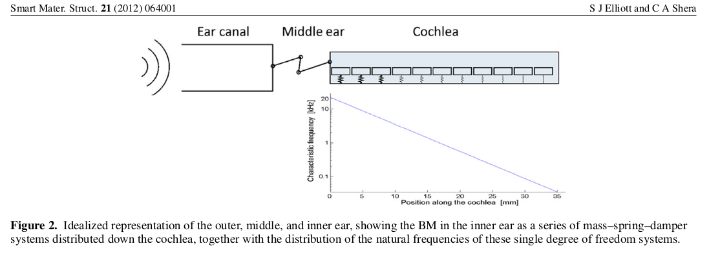

1. Conceptos de vibraciones.#
Un sistema que realiza movimientos oscilatorios, también llamado, sistema vibratorio, lo podemos definir como un conjunto de componentes que actúan como un todo.
Como motivación al análisis, en la Figura 1 se puede observar una representación idealizada del sistema auditivo humano. Específicamente, se muestra a la membrana basilar ubicada en la cóclea, como un sistema de \(N\) grados de libertad, compuesto de \(N\) elementos discretos de masas y resortes. Se observa que la rigidez de estos resortes varía de acuerdo a la distancia de la membrana basilar, que es medida desde la base o entrada a la cóclea (extremo izquierdo), hasta el apex (extremo derecho). Paper The cochlea as a smart structure. Stephen J Elliott and Christopher A Shera Published 30 May 2012. IOP Publishing Ltd. Smart Materials and Structures, Volume 21, Number 6.

from IPython.display import YouTubeVideo
YouTubeVideo('ZgQ8NeKo2oM', width=800, height=300)
1.1. Cuál es la pregunta de investigación en un sistema que vibra?#
Cómo responderá un sistema a excitaciones, o estímulos, de diversa naturaleza? Pensar en el sistema auditivo!
En análisis de un sistema que vibra se puede realizar en el dominio del tiempo, o en el dominio de la frecuencia donde es importante comprender el comportamiento de las funciones de transferencia.
La manera en que responderá un sistema vibratorio, como se ve en la Figura 2, a una excitación \(F(\omega)\) dependerá de la naturaleza de la excitación y de las propiedades del sistema representadas por su función de transferencia \(H(\omega)\), donde \(\omega\) es la frecuencia angular.
Tales funciones se usan no sólo en análisis de vibraciones, sino que también en análisis modal de sistemas más complejos. El propósito del análisis modal es identificar las frecuencias naturales de un sistema, determinar el amortiguamiento y comprender las formas de modales de un sistema vibratorio.
Como un punto de partida, para abordar esta pregunta se considera fundamental la Mecánica de Newton.
Qué implica la Mecánica de Newton?
Modelos de componentes.
Modelos de sistemas.
Ecuaciones diferenciales de movimiento.
Características de la excitación.
Características de la respuesta.
Comportamiento de la vibración.
Funciones de transferencia.

1.2. Ecuaciones de movimiento y leyes de Newton#
El comportamiento del sistema vibratorio está gobernado por ecuaciones diferenciales de movimiento. Para encontrar la respuesta del sistema se deben resolver estas ecuaciones. Se suele comenzar revisando la mecánica de Newton.
Aunque incialmente las leyes de Newton se formularon para partículas solas, éstas se pueden extender a sistemas de N partículas e incluso extender a un cuerpo rígido.
\(1^{era}\) Ley de Newton:
En ausencia de fuerzas, la expresión matemática de la primera ley:
Si sobre una partícula sola, no hay fuerzas que actúen, entonces: \(\overrightarrow{\bf{F}}=\overrightarrow{0}.\) Eso significa, que la partícula se moverá con velocidad constante \(\overrightarrow{\bf{v}}={\text{cte}}\), y en línea recta. \(\overrightarrow{\bf{F}}(t)\) y \(\overrightarrow{\bf{v}}(t)\) representan el vector de fuerza total resultante y el vector de velocidad, relativos a un conjunto de ejes inerciales-\(xyz\) (ver la siguiente figura). En la figura, \(\overrightarrow{\bf{r}}\) representa el vector de posición de la partícula de masa \(m\) relativa al espacio inercial -\(xyz\).

\(2^{a}\) Ley de Newton:
La expresión matemática de la segunda ley:
Una partícula sola, de masa \(m\), accionada por una fuerza \(\overrightarrow{\bf{F}}\) se mueve de modo que el vector fuerza es igual a la tasa de cambio del vector momentum lineal \(\overrightarrow{\bf{p}}\), donde
donde la masa \(m\) es una cantidad positiva que no depende del tiempo. En la Ecuación anterior, \(\dot{\overrightarrow{\bf{r}}}\) representa la derivada con respecto al tiempo del vector de posición. Insertando la Ec. (3), en Ec. (2), se obtiene la \(2^{a}\) ley de Newton en su forma más reconocida:
donde \({\overrightarrow{\bf{a}}}\) es el vector de aceleración de la partícula de masa \(m\) relativa al conjunto de ejes inerciales-\(xyz\). La Ec. (4), \(\overrightarrow{\bf{F}}=m{\overrightarrow{\bf{a}}}\), es la ecuación de movimiento de movimiento de la partícula de masa \(m\). \(\overrightarrow{\bf{F}}\) representa la resultante de todas las fuerza que están accionando la partícula.
Unidades. Sistema internacional: \([m]=[\text{kg}]\); \([\overrightarrow{\bf{F}}]=[\text{N}]\); donde \(1[\text{N}]= 1 \text{kg}\cdot\text{m}/s^{2}.\)
\(3^{a}\) Ley de Newton: La expresión matemática de la tercera ley:
Cuando dos partículas ejercen fuerzas entre sí, las fuerzas yacen a lo largo de la línea que las une y los vectores de fuerzas correspondientes son uno el negativo del otro. Son vectores colineales.
1.3. Diagrama de cuerpo libre:#
Al utilizar la 2\(^{\underline{a}}\) Ley de Newton para derivar las ecuaciones de movimiento de una partícula de masa \(m\), se suele hacer un diagrama de cuerpo libre (DCL) de cada una de las fuerzas que accionan \(m\).
1.4. Ejemplo de aplicación.#
Un péndulo simple, no amortiguado, consiste de la partícula de masa \(m\), suspendida de una cuerda de longitud \(L\). Obtener la ecuación diferencial de movimiento para el desplazamiento angular \(\theta (t)\) del péndulo. También, derivar una expresión para la tensión \(T\) de la cuerda.

1.4.1. Desarrollo#
La solución del problema se puede obtener usando la 2\(^{\underline{a}}\) Ley de Newton. Previamente, se deben conocer las componentes: radial y transversal, de la aceleración.

En la Fig. 4, \(\hat{r}\) y \(\hat{\theta}\) representan dos vectores unitarios, perpendiculares, que indican dirección en sentido radial y dirección en sentido transversal, respectivamente.
En el DCL, la primera fuerza aplicada considerada es representada por \(T\). Aunque la tensión \(T\) es una fuerza interna, ésta está jugando el rol de una fuerza externa que acciona la partícula de masa \(m\). Mientras que la segunda fuerza considerada es el peso dado por: \(mg.\)
Del diagrama de cuerpo libre, se escriben las ecuaciones de movimiento, en términos de las componentes radial y transversal de la aceleración:
Del problema, se reconoce que el vector de posición tiene magnitud: \(r = L = c^{\underline{te}}\).
Deducción de las componentes de la aceleración:
Suponer que tenemos un movimiento circular como el de la siguiente figura, donde el vector de posición de \(m\), es representado por \(\overrightarrow{\bf{r}}\).

Si se observa que \(r = L = {\text{constante}}\), entonces
De la figura, el vector de posición de \(m\) se puede expresar como:
Mientras que el vector de velocidad de la partícula \({\bf{\overrightarrow{v}}}\) se obtiene al derivar \({\bf{\overrightarrow{r}}}\) respecto del tiempo en la Ec. (9):
Si se llama \(\bf{\overrightarrow{a}}\) al vector de aceleración, entonces:
Se observa que en un movimiento circular, la aceleración tiene dos componentes: una componente radial y otra componente transversal.
Ahora, volviendo al problema del péndulo simple, si \(r=L\), donde \(L\) es el largo de la cuerda, el vector de aceleración será:
Esto es, se tiene en este caso dos componentes: una radial
y otra transversal:
Por lo tanto, reemplazando en las Ecs. (6) y (7), se tiene:
De la Ec. (16), se obtiene la ecuación diferencial no lineal de movimiento del péndulo simple:
Suponiendo pequeños desplazamientos angulares, por serie de Taylor, se puede asumir que \(\text{sen}(\theta)\,\sim \theta\). Por lo tanto, se re-escribe como una ecuación diferencial lineal de movimiento del péndulo simple:
2. Plotear la solución lineal y no lineal de un péndulo simple#
Solución para condiciones iniciales \(\theta_{0}\) y \(\dot{\theta_{0}}\):
L = 1 m; g = 9.81 m/\(s^2\); \(\theta_{0} = \pi /3 = [60°]\); \(\dot{\theta_{0}}=0\) (rad/s)
Solución lineal:
#https://cooperrc.github.io/engineering-dynamics/module_03/project.html
import numpy as np
import matplotlib.pyplot as plt
from scipy.integrate import solve_ivp
g = 9.81 # m/s/s
L = 1 # m
w = np.sqrt(g/L) # rad/s
t = np.linspace(0, 4*np.pi/w) # 2 time periods of motion
theta0 = np.pi/3
dtheta0 = 0
theta = theta0*np.cos(w*t) + dtheta0/w*np.sin(w*t)
plt.plot(t, theta*180/np.pi)
plt.xlabel('time (s)')
plt.ylabel(r'$\theta(t)$ [degrees]')
plt.grid()
2.1. Plotear la solución no lineal de un péndulo simple#
g = 9.81
L = 1
def pendulum(t, x):
'''pendulum equations of motion for theta and dtheta/dt
arguments
---------
t: current time
x: current state variable [theta, dtheta/dt]
outputs
-------
dx: current derivative of state variable [dtheta/dt, ddtheta/ddt]'''
dx = np.zeros(len(x))
dx[0] = x[1]
dx[1] = -g/L*np.sin(x[0])
return dx
sol = solve_ivp(pendulum, [0, t.max()], [theta0, 0], t_eval = t)
print(sol.t)
[0. 0.08188027 0.16376055 0.24564082 0.32752109 0.40940136
0.49128164 0.57316191 0.65504218 0.73692245 0.81880273 0.900683
0.98256327 1.06444354 1.14632382 1.22820409 1.31008436 1.39196464
1.47384491 1.55572518 1.63760545 1.71948573 1.801366 1.88324627
1.96512654 2.04700682 2.12888709 2.21076736 2.29264764 2.37452791
2.45640818 2.53828845 2.62016873 2.702049 2.78392927 2.86580954
2.94768982 3.02957009 3.11145036 3.19333063 3.27521091 3.35709118
3.43897145 3.52085173 3.602732 3.68461227 3.76649254 3.84837282
3.93025309 4.01213336]
plt.plot(sol.t, sol.y[0]*180/np.pi)
plt.xlabel('time (s)')
plt.ylabel(r'$\theta(t)$ [degrees]')
Text(0, 0.5, '$\\theta(t)$ [degrees]')
2.2. Comparando resultados#
plt.plot(t, theta*180/np.pi)
plt.plot(sol.t, sol.y[0]*180/np.pi)
plt.xlabel('time (s)')
plt.ylabel(r'$\theta(t)$ [degrees]')
Text(0, 0.5, '$\\theta(t)$ [degrees]')